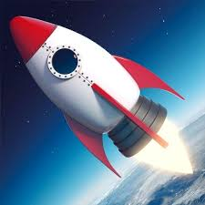

A Brief History of Rocket Ships

The idea of a rocket up until our modern understanding of the term has changed drastically through the ages and it is through the many years of experimentation that we have now the rockets we know today
- 400-ish BC, a Greek gentleman named Archytas made a wooden pigeon fly. Escaping steam propelled the bird suspended on wires.
- 100-ish BC, another Greek, Hero of Alexandria, invented a similar rocket-like device called an aeolipile
- Somewhere in the first century AD, the Chinese developed a simple form of gunpowder
- 1232, the first reported use of true rockets between the Chinese and the Mongols at the battle of Kai-Keng
- 13th - 15th centuries, there were reports of many rocket experiments
- In England, a monk named Roger Bacon worked on improved forms of gunpowder that greatly increased the range of rockets.
- In France, Jean Froissart found that more accurate flights could be achieved by launching rockets through tubes.
- Joanes de Fontana of Italy designed a surface-running rocket-powered torpedo for setting enemy ships on fire.
- 16th century, rockets fell into a time of disuse as a weapon of war, they were still used for fireworks and displays, and a German fireworks maker, Johann Schmidlap, invented the "step rocket"
The Science of Rocketry
- 1642-1727, the scientific foundations for modern rocketry were laid by the great English scientist Sir Isaac Newton
- 1720-ish, a Dutch professor, Willem Gravesande, built model cars propelled by jets of steam.
- End of 18th century-early 19th century, rockets were briefly revived as weapons
Modern Rocketry
- 1898, a Russian schoolteacher, Konstantin Tsiolkovsky, proposed the idea of space exploration by rocket.
- Early 20th century, an American, Robert H. Goddard, conducted practical experiments in rocketry.
- 1923, Hermann Oberth published a book in 1923 about rocket travel into outer space.
- 1957, Sputnik I, the satellite was the first successful entry in a race for space between the two superpower nations.
- 1958, Explorer I was launched by the U.S. Army.
- 1958, the United States formally organized its space program by creating the National Aeronautics and Space Administration (NASA).
To read the entire brief history of rockets click here